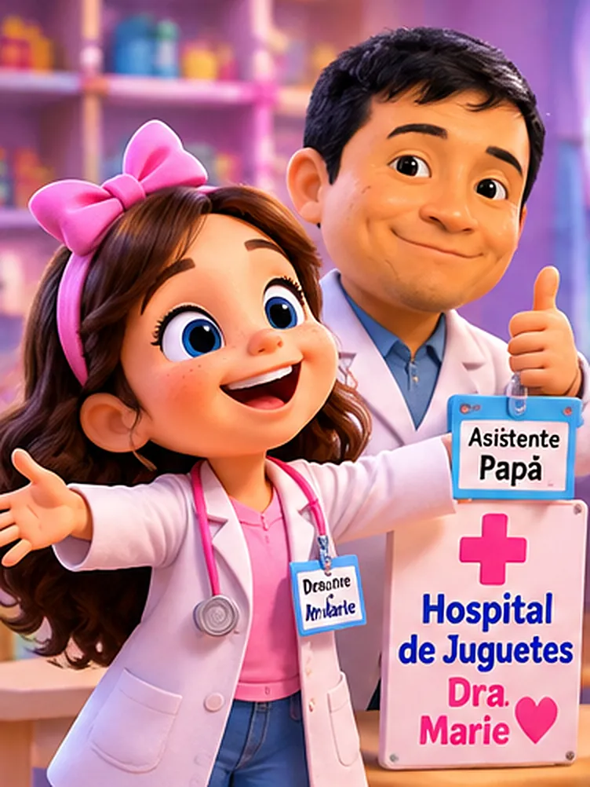
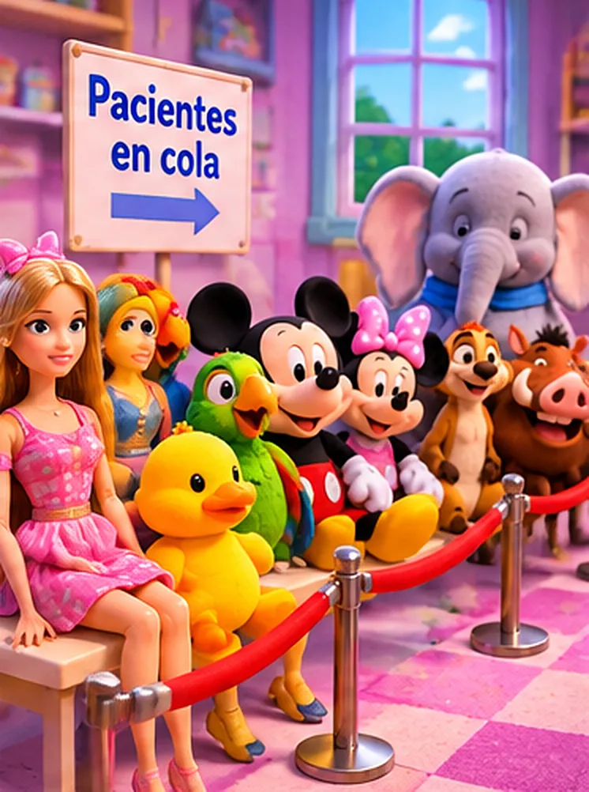
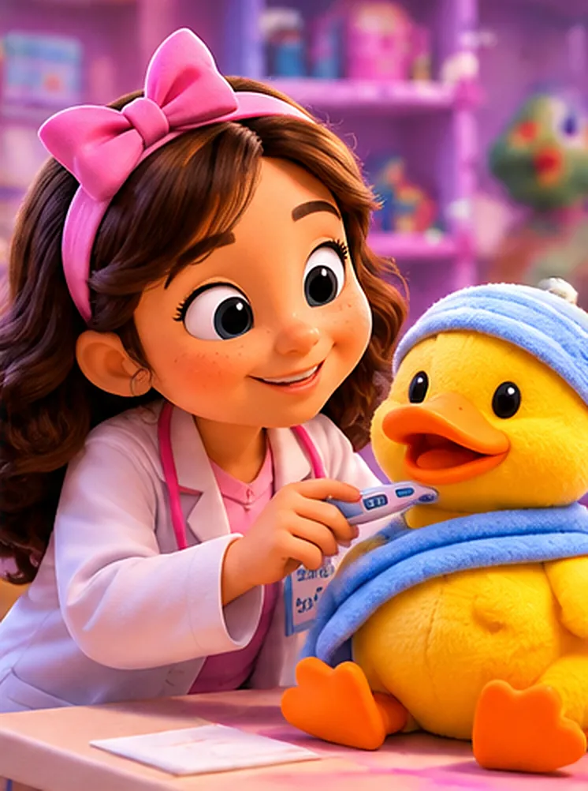
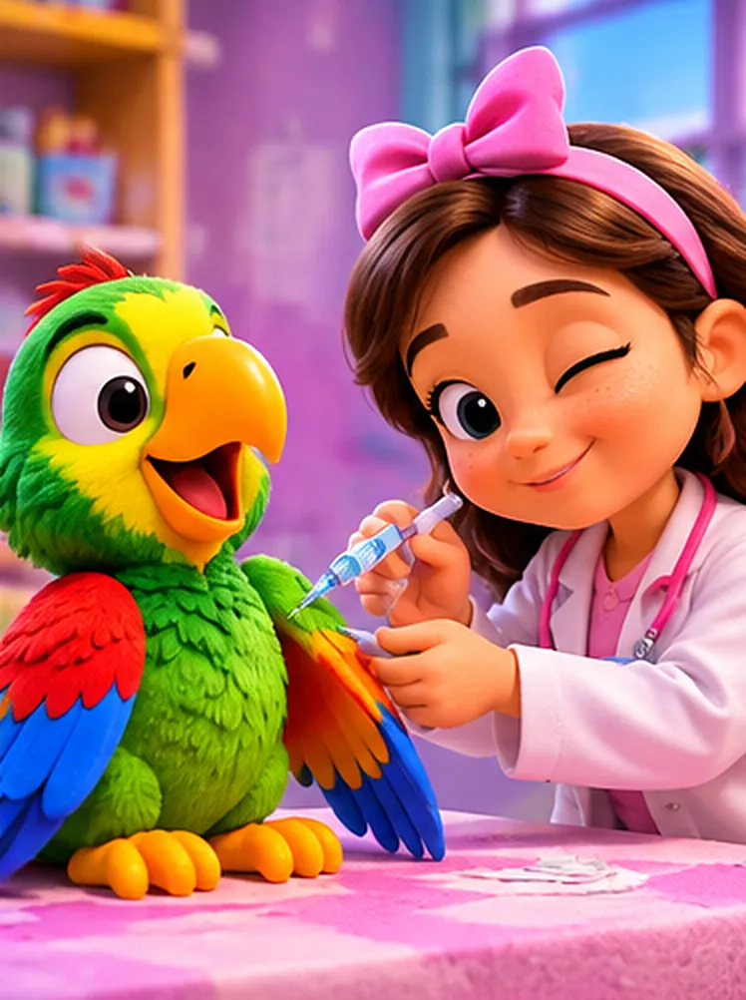
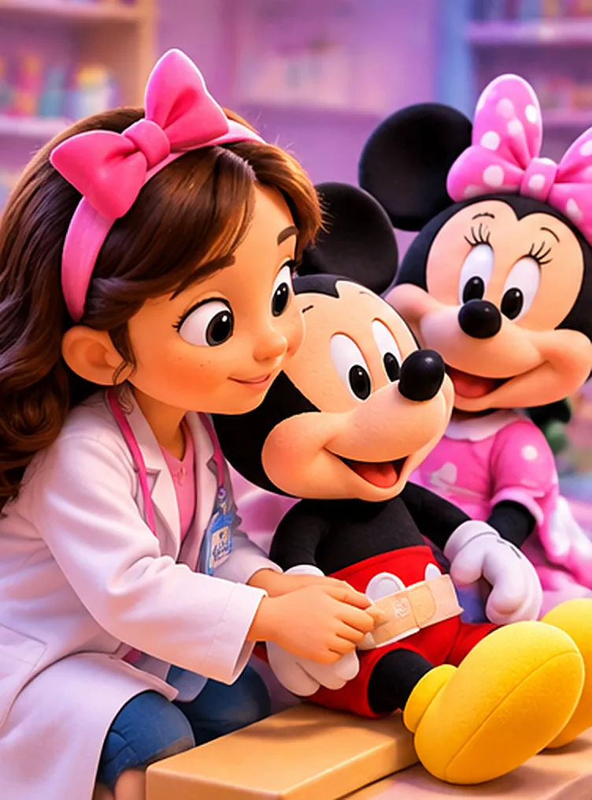
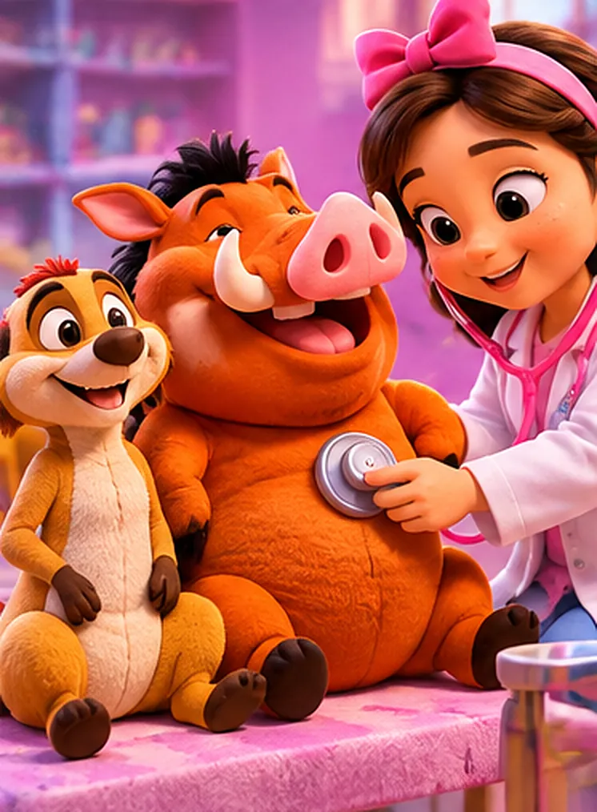
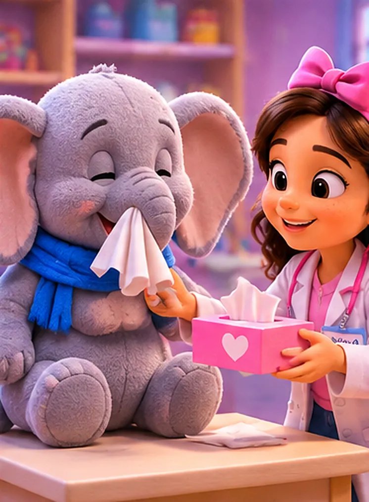
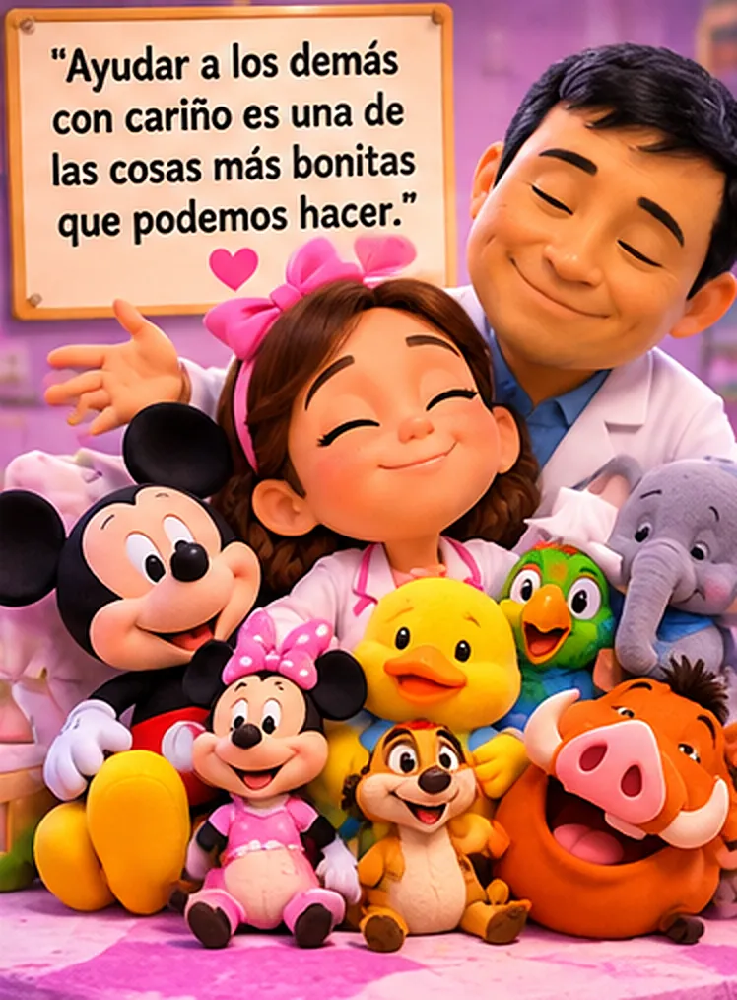

Había una vez una niña llamada Marie que tenía un sueño muy especial: ¡quería ser doctora!
Una mañana, Marie se puso su bata blanca, tomó su estetoscopio de juguete y anunció:
—¡Papá, hoy voy a abrir mi propio hospital!
—¿Y quién será tu asistente, doctora? —preguntó su papá, sorprendido.
—¡Tú, papá! Pero tienes que obedecer mis indicaciones —respondió Marie, muy seria.
—¡Sí, doctora Marie! —dijo su papá, haciendo un saludo militar.
Y así nació el famoso Hospital de la Doctora Marie, donde todos los pacientes eran bienvenidos.

Papá acomodó unas sillitas y Marie colocó a sus pacientes en una larga fila: primero sus muñecas Barbie, muy elegantes; después el pato de peluche, el loro Pepe, Mickey, Minnie, Timón, Pumba y un enorme elefante.
—¡Atención, pacientes! ¡Por favor, hagan su cola y esperen su turno! —anunció papá.
Pero Pumba ocupaba tanto espacio que Timón protestó:
—¡Oye, Pumba! ¡Estás ocupando tres asientos!
—¡Es que tengo una barriga muy grande! —respondió Pumba.
—¡Silencio, por favor! ¡Esto es un hospital, no un circo! —dijo Marie, muerta de risa.

El primer paciente fue el pato de peluche.
—Buenos días, señor Pato. ¿Qué le duele? —preguntó Marie.
—¡Cuac, cuac! ¡Creo que tengo fiebre! —respondió papá, haciendo la voz del pato.
Marie le colocó con cuidado su termómetro de juguete.
—Mmm… ¡Tiene treinta y nueve grados de fiebre imaginaria!
—¡Cuac! ¿Es grave, doctora?
—¡Necesita descansar y tomar mucha agüita! —dijo Marie, y le puso una curita en el ala—. ¡Listo! ¡Siguiente paciente!
—¡Muchas gracias, doctora! ¡Cuac, cuac!

El siguiente paciente fue el loro Pepe.
—¡Buenos días, Pepe! —saludó Marie.
—¡Buenos días, doctora! ¡Buenos días, doctora! —repitió papá, imitando al loro.
—Hoy te toca tu vacuna de juguete —anunció Marie.
—¡No, no, no! ¡Tengo miedo! ¡Tengo miedo! —gritó Pepe.
—Tranquilo, Pepe. Es solo un juego, no te va a doler —le dijo Marie, acariciándolo suavemente.
Le puso la jeringa de juguete en el ala y… ¡listo! Papá hizo saltar al loro:
—¡No me dolió! ¡No me dolió! ¡Soy un loro valiente!
Y Marie soltó una carcajada.

Después llegaron Mickey y Minnie.
—Doctora, Mickey se cayó mientras bailaba —explicó Minnie.
Marie examinó su rodilla, le puso una curita de colores y le recomendó descansar.
Luego llegaron las Barbies. Una tenía dolor de cabeza, otra decía que le dolía el pie y la tercera tenía un problema muy extraño:
—Doctora, ¡se me despeinó el cabello!
—¡Eso no es una enfermedad! —dijo Marie, sorprendida.
—Doctora, ¿llamamos a una peluquera? —preguntó papá.
—¡No, papá! ¡Tráeme un peine!
Y todos se echaron a reír.

Llegó el turno de Timón.
—Doctora, ¡me duele la barriga de tanto reírme!
Marie lo examinó con su estetoscopio:
—¡Necesitas descansar de tantos chistes!
Después entró Pumba.
—¡Doctora, tengo mucha hambre!
—¿Y qué comiste hoy? —preguntó Marie.
—¡Desayuné, almorcé… y después volví a desayunar!
—¡Pumba! ¡Tienes que comer con tranquilidad! —exclamó Marie.

Finalmente llegó el elefante.
—¡Aaaaachís! —estornudó papá tan fuerte que casi se cae de la silla.
Marie se rio muchísimo.
—¡Papá! ¡Ese elefante necesita un pañuelo gigante!

Después de varias horas de consultas imaginarias, todos los pacientes estaban felices. Papá se acercó con una cajita y preguntó:
—Doctora Marie, ¿cuánto les vamos a cobrar a los pacientes?
—¡Nada, papá! —dijo Marie, abriendo mucho los ojos.
—¿Nada? ¿Ni una moneda?
—¡No! Mi hospital es gratis. Yo quiero que todos se curen y estén felices.
—¿Y qué recibes a cambio? —preguntó papá, sonriendo.
Marie miró a sus muñecas y peluches:
—¡Muchos abrazos!
Entonces su papá la abrazó muy fuerte.
—Doctora Marie, usted tiene un corazón enorme.
Cuando llegó la noche, Marie estaba muy cansada. De pronto, papá anunció:
—¡Doctora! ¡Tenemos una última paciente!
—¿Quién es, papá? —preguntó Marie, levantándose rápido.
—¡Una niña llamada Marie, que ha trabajado demasiado y necesita descansar!
—¡Pero papá, yo soy la doctora! —dijo Marie, riendo.
—¡Hoy te toca ser la paciente!
Papá tomó el estetoscopio de juguete y escuchó su corazón.
—Mmm… ¡Diagnóstico confirmado!
—¿Qué tengo, doctor?
—¡Un corazón lleno de cariño y unas enormes ganas de dormir!
Marie abrazó a su papá y se acostó junto a sus peluches. Antes de cerrar los ojos, susurró:
—Mañana abriré otra vez mi hospital.
—¡Aquí estará tu asistente, doctora Marie! —respondió papá.
Fin.
Ayudar a los demás con cariño es una de las cosas más bonitas que podemos hacer. No siempre necesitamos recibir dinero o regalos, porque una sonrisa y un abrazo también son grandes recompensas.